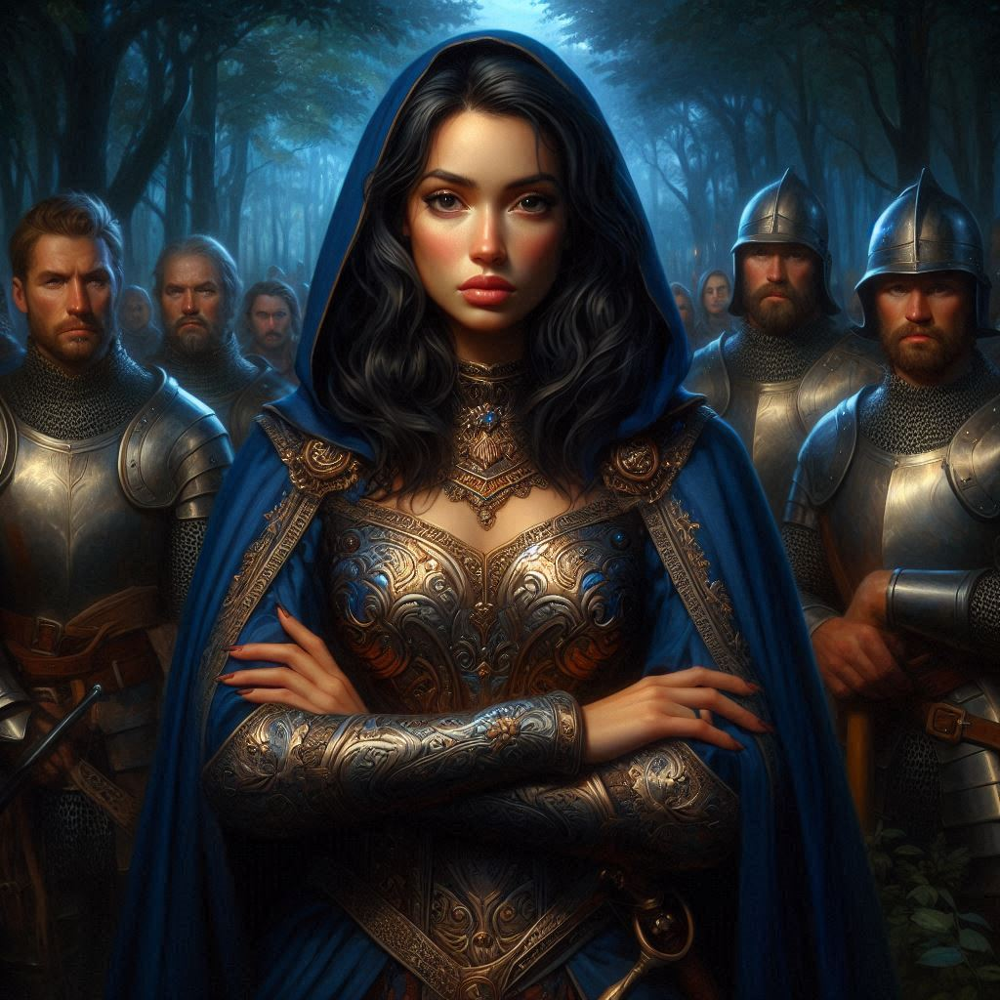
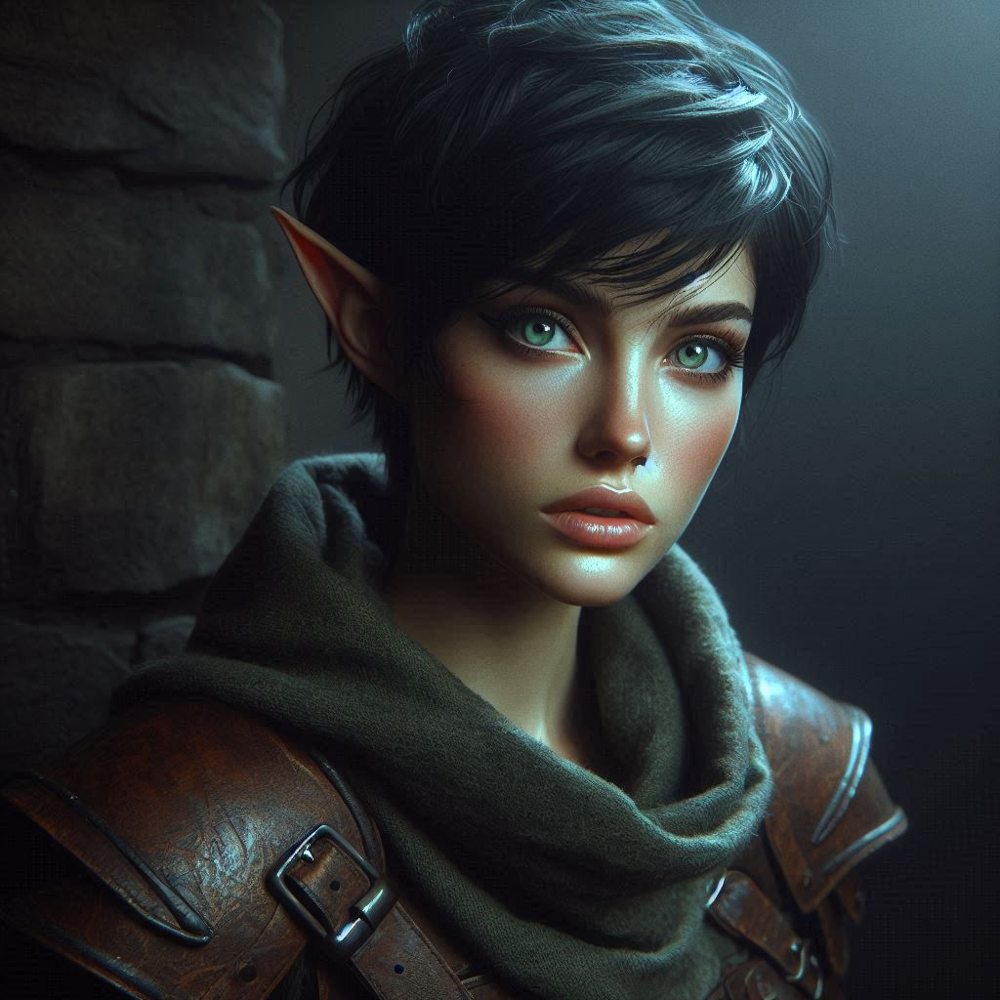

The Betrayal Unveiled
The air in the woods near Hemlock Falls is thick with tension, the silence heavy as you stand across from the mysterious ranger who had saved your life just hours earlier. Her eyes, cool and calculating, watch you as she offers her hand once more. She’s beautiful, with an air of quiet confidence, but something about her unsettles you. You can’t afford distractions—not now, not when Jorsh is so close.
“I appreciate your help,” you say, your voice steady despite the turmoil in your chest. “But I have to do this alone.”
The ranger’s brow furrows, her hand slowly lowering to her side. “Are you sure, Kira? Two rangers together could cover more ground. Hemlock Caverns is no place to be wandering on your own.”
You shake your head, taking a step back. “I have a mission to complete, and I can’t afford any entanglements. Thank you for healing me, but my path diverges from yours.”
She regards you in silence for a moment, her piercing eyes seeming to search for something deeper within you. Then, after a tense pause, she nods. “Very well, ranger. Safe travels.”
You watch as she disappears into the shadows of the forest, her departure swift and silent. There’s a strange sense of relief as she goes, but also a gnawing feeling at the back of your mind—like you’ve made a mistake. Still, you push the thought aside. You’ve made it this far on your own, and you’re determined to finish what you started.
You turn, heading deeper into the woods, your wounds still aching but your resolve unshaken. Hemlock Caverns looms ahead, its secrets waiting for you. But before you can make much progress, a rustling in the trees catches your attention. You pause, instinctively reaching for your dagger.
Then, out of the darkness, armored figures emerge, surrounding you in a tight circle. Their armor gleams with the insignia of the Kingdom of Yew. Royal guards. You feel your heart leap into your throat. There’s no mistaking their purpose.
“Stand down, Kira Coldspring,” one of the guards commands, his voice cold and authoritative. “You are under arrest by order of Princess Hawthorn.”
Your blood runs cold as you process the words. Princess Hawthorn? You have heard rumors that the royal family may be involved in this… but at this level? Arresting a ranger on official business? Your thoughts race as the guards close in, their weapons drawn. There’s no way out.
“What is this about?” you demand, your voice edged with defiance. “I’m on a mission for the magistrate—”
“Silence,” the guard snaps, stepping forward with his sword raised. “You will answer to the princess directly.”
Before you can react, the guards grab you roughly, forcing your hands behind your back and binding them with thick ropes. Struggling is useless—there are too many of them. You grit your teeth, anger and confusion swirling in your chest. How could this have happened?
And then, from the shadows, she steps forward. The mysterious ranger. Her hood falls back, revealing a face you recognize from stories and portraits. The regal bearing, the piercing gaze—it all makes sense now. She isn’t just a ranger.
“Princess Hawthorn…” you breathe, disbelief coloring your voice.
Hawthorn smiles faintly, though there’s no warmth in her expression. “You’re more resourceful than I thought, Kira. But you’ve become too much of a complication for me to ignore.”
Your mind reels. She was using you the entire time. “You… you set this up,” you say, your voice shaking with anger. “You healed me, helped me, just to betray me?”
Her gaze remains steady, cold. “I needed to know if you could be useful to me. But I can’t afford to have a renegade ranger interfering with my plans.”
Your heart pounds in your chest as the weight of her words sinks in. She’s playing a game far more dangerous than you imagined, and now you’re caught in the middle of it. “What plans?” you ask, gritting your teeth. “What are you after?”
But Hawthorn doesn’t answer. Instead, she steps closer, her face inches from yours. “You’ve made a mistake, Kira. You should’ve taken my offer.”
Her voice is low, almost regretful, but there’s no mercy in her eyes. She nods to the guards. “Take her back to the palace dungeon. I’ll deal with her personally.”
The guards haul you to your feet, dragging you through the forest as the weight of your failure presses down on you. You barely register the rough terrain beneath your feet, your mind spinning with the reality of your situation. Hemlock Caverns, Jorsh, Varis—it all fades away as the cold shackles of imprisonment snap around your wrists.
The journey back to the palace is a blur, and before long, you’re thrown into the dark, damp confines of the royal dungeon. The iron bars slam shut behind you with a resounding finality, the echoes ringing in your ears like a death sentence.
You sink to the floor, your body trembling with rage, frustration, and despair. The flickering torchlight casts long shadows across the stone walls, the reality of your situation settling in.
Princess Hawthorn has won. And you… you’ve lost everything.